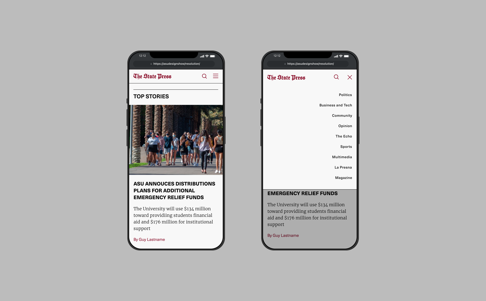

The State Press is Arizona State University's independent and student run news orgainzation. I was commissioned by the editorial board to redesign the website with a more modern aesthetic, clear hierarchy and faster navigability.

